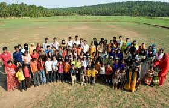

Twin Town
Kodinhi is a village in Malappuram district in Kerala, India. The village is situated close to the town of Tirurangadi and, as of 2008, is home to around 2,000 families.The village entered the international spotlight when a survey done by locals found an unusually large number of twin births in the region. A report by Indian Express Correspondent Mithosh Joseph had brought the attention of several people outside India to the attraction of the spot. Though initial estimates put the instance of multiple births at 100 pairs, follow-up surveys found the figure to be closer to 204 pairs (408 individuals) of twins, and two sets of triplets.
Despite several studies being conducted, the exact cause of this phenomenon is yet to be ascertained. Women from Kodinhi married off to far away places are also known to give birth to twins. According to doctors this phenomenon is due to chemicals present in water in the Kodinhi area. According to locals, the oldest known twin pair in the village was born in 1949. The number of twin births in Kodinhi has been increasing over the years, with surveys showing over 79 pairs of twins within the age group of 0–10 years.This phenomenon of a large number of twin births is not unique to Kodinhi, and has also been observed in the town of Igbo-Ora in Nigeria. In Igbo-Ora, research has suggested that the multiple births could be related to the eating habits of the women in the region.Though no direct correlation between dietary intake and twin births has been observed, a research study carried out at the University of Lagos Teaching Hospital has suggested that a chemical found in the Igbo-Ora women and the peelings of a widely consumed tuber could account for the high level of multiple births. In the case of Kodinhi, however, no such relationship has been observed, as the residents' dietary patterns are not known to be significantly different from the rest of Kerala.In 2008, around 30 pairs of twins from Kodinhi, along with their parents, got together to form the The Twins and Kins Association, the first such association of twins in India. The forum, according to its founders, aims to bring to wider attention problems peculiar to people of multiple births, such as those concerning their education and health.
